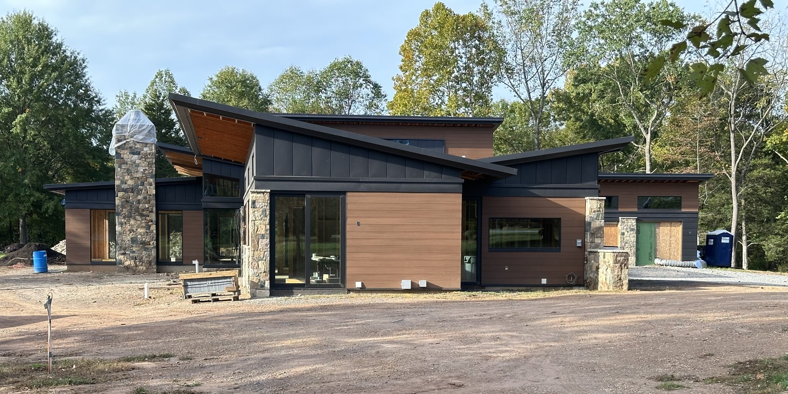
Haymarket, Virginia · Underway
Architecture by Todd Webb · Built by Steve Howard.
A Collaboration · In Progress
A current Todd Webb and Steve Howard collaboration in Haymarket, Virginia — clean shed rooflines, warm wood, stone, and dark metal set against the tree line. Architect-designed and builder-made, the same team carrying it from drawing to delivery.
The photos below follow the build as it happens — from foundation and framing to the sealed envelope and the exterior nearing completion. Professional photography to come.
The Build
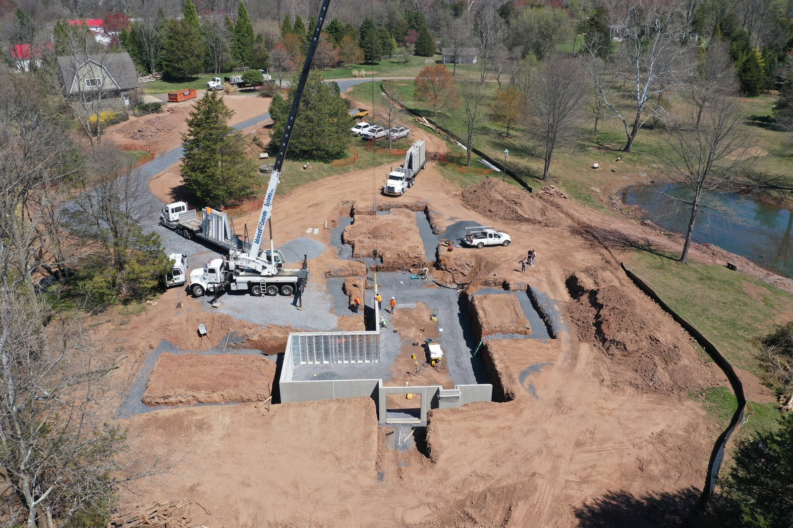
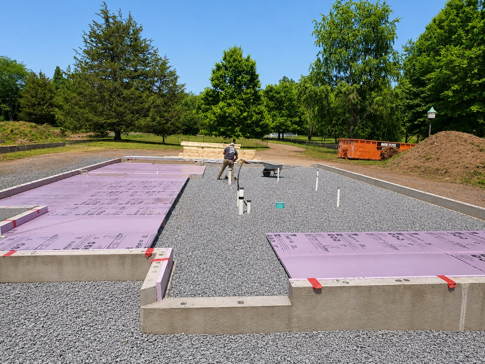
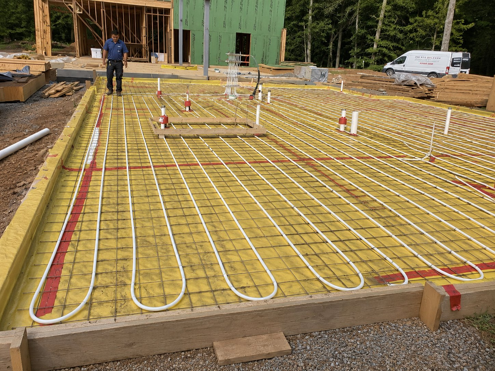
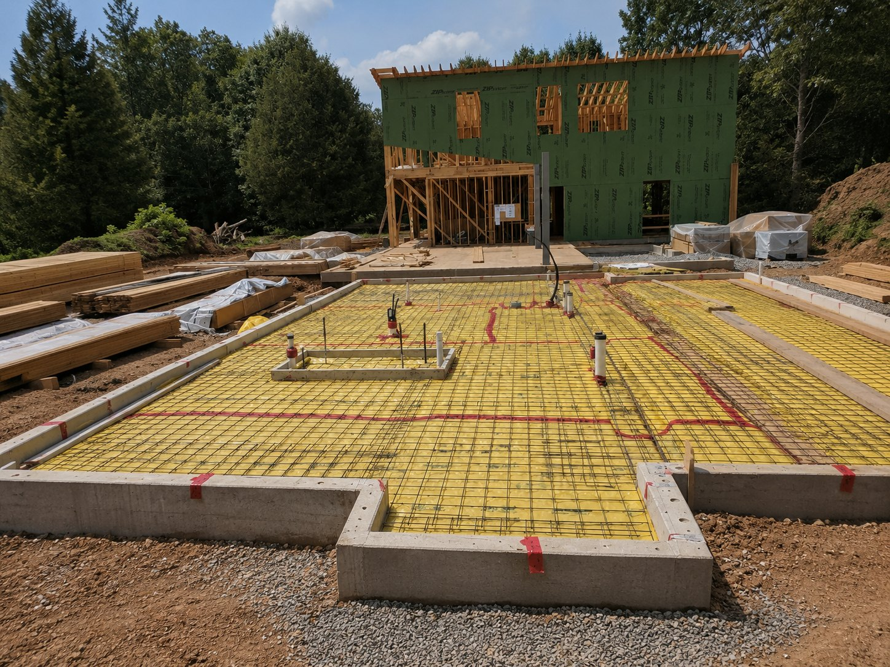
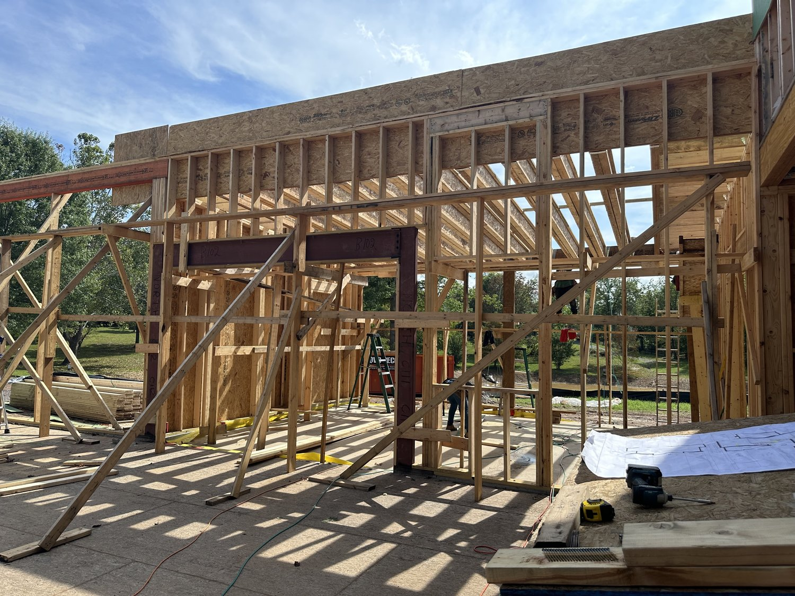
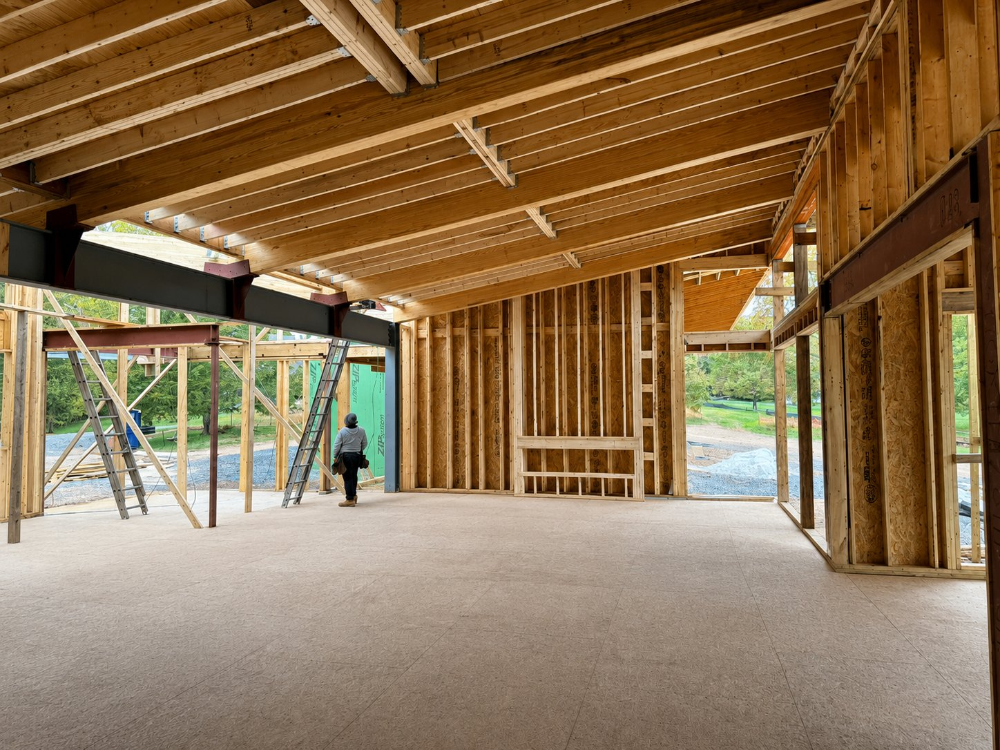
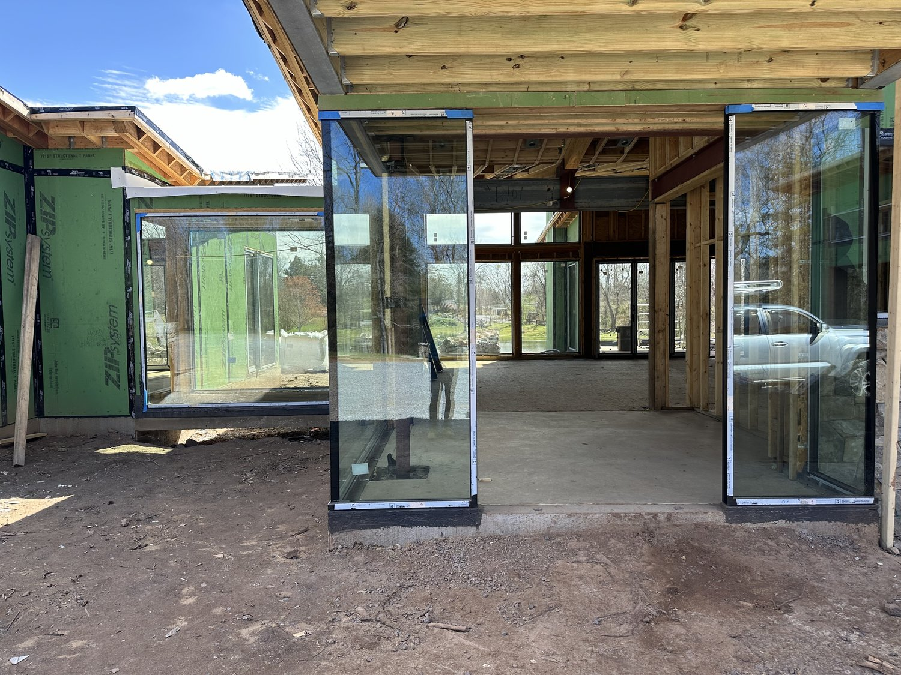
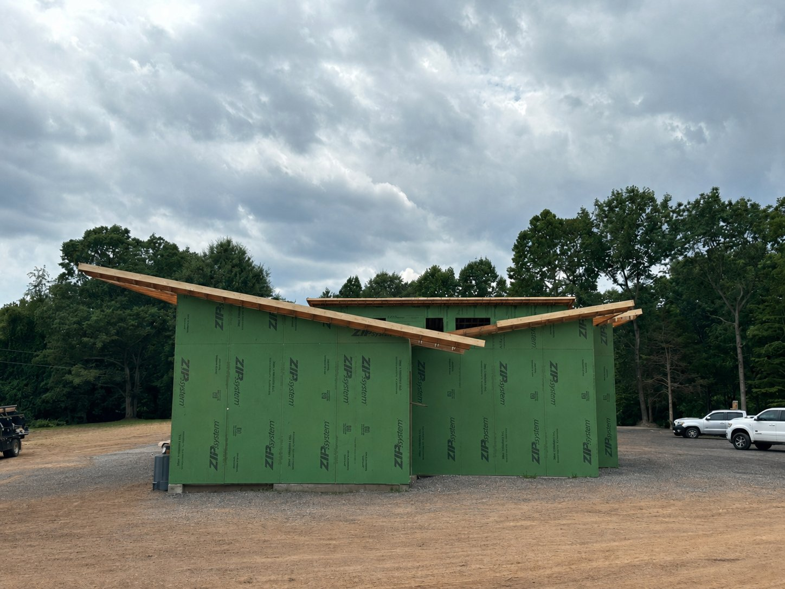
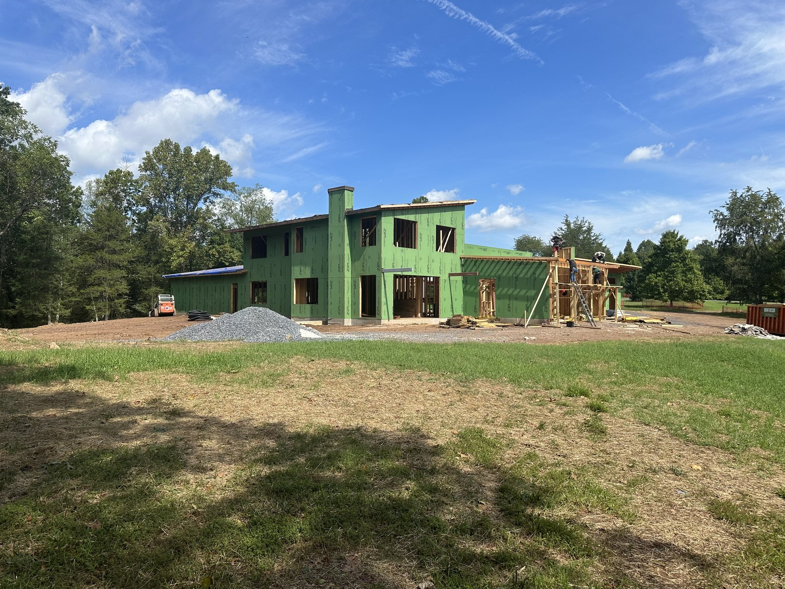
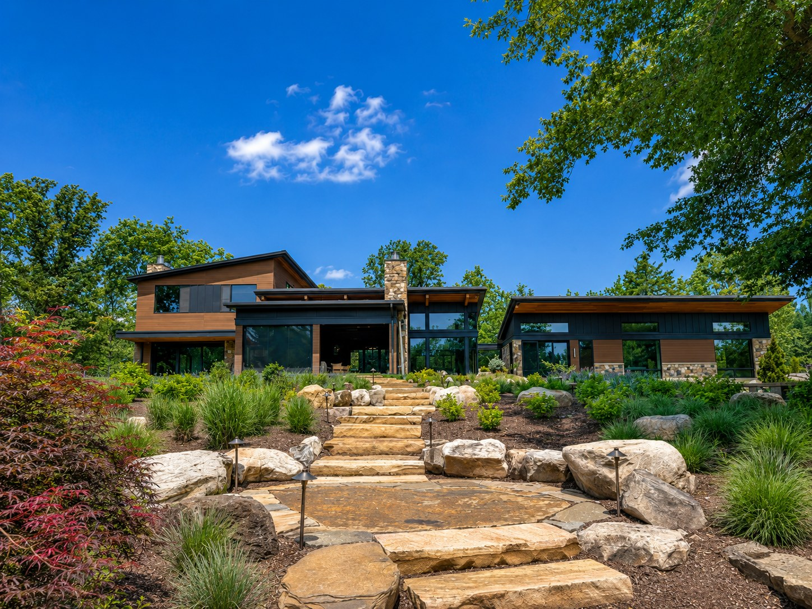
Behind the Walls
The green wrapping these walls is ZIP System sheathing — a structural panel with a built-in water and air barrier, taped tight at every seam. On most homes, that's the whole weather story. On Haymarket, it's only the first layer.
Over the ZIP, we self-adhered Benjamin Obdyke HydroGap SA — a top-of-class drainable housewrap with a 120-day UV rating — then furred out a vented rainscreen before the siding went on. Two independent drainage planes and a ventilated cavity: any water that ever gets behind the cladding has somewhere to drain and a path to dry. A wall built to outlast its finish — not a typical ZIP job.
Energy & Resilience
Haymarket is topped with a complete Tesla Solar Roof and backed by five Tesla Powerwalls — the home makes its own power by day and carries its own load straight through an outage, with no generator in sight.
It's a whole-home energy system very few houses in the region have ever had: quiet, clean, and resilient by design. Photography of the roof and battery wall to come.
Follow the Build